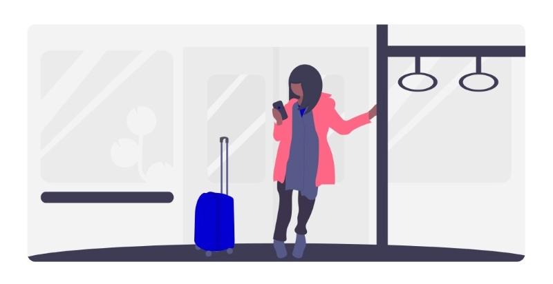

Comece nossa jornada criando seu bilhete¹.
¹ O bilhete só poderá ser gerado se os Termos de Uso e Política de Privacidade e as Regras de Utilização do Bilhete forem aceitos.
O Código do seu Bilhete foi gerado!

TERMOS DE USO E
POLÍTICA DE PRIVACIDADE
A sua privacidade é importante para nós. É política do TechTIKT respeitar a sua privacidade em relação a qualquer informação sua que possamos coletar no site TechTIKT, e outros sites que possuímos e operamos.
Solicitamos informações pessoais apenas quando realmente precisamos delas para lhe fornecer um serviço. Fazemo-lo por meios justos e legais, com o seu conhecimento e consentimento.
Também informamos por que estamos coletando e como será usado. Apenas retemos as informações coletadas pelo tempo necessário para fornecer o serviço solicitado. Quando armazenamos dados, protegemos dentro de meios comercialmente aceitáveis para evitar perdas e roubos, bem como acesso, divulgação, cópia, uso ou modificação não autorizados.
Não compartilhamos informações de identificação pessoal publicamente ou com terceiros, exceto quando exigido por lei.
O nosso site pode ter links para sites externos que não são operados por nós. Esteja ciente de que não temos controle sobre o conteúdo e práticas desses sites e não podemos aceitar responsabilidade por suas respectivas políticas de privacidade. Você é livre para recusar a nossa solicitação de informações pessoais, entendendo que talvez não possamos fornecer alguns dos serviços desejados.
O uso continuado de nosso site será considerado como aceitação de nossas práticas em torno de privacidade e informações pessoais. Se você tiver alguma dúvida sobre como lidamos com dados do usuário e informações pessoais, entre em contato conosco.
REGRAS DE UTILIZAÇÃO
DO BILHETE
O usuário de transporte público, ao acessar o sistema de utilização do bilhete, digitará o número do Bilhete Urbano e o sistema irá liberar o acesso ao transporte público seguindo as seguintes regras:
1. O usuário deverá possuir um número do bilhete urbano gerado.
2. O usuário deverá possuir recarga no seu bilhete urbano.
3. O usuário irá até um transporte urbano (ônibus, metrô ou trem) e utilizará o terminal de acesso junto à catraca de entrada.
4. O sistema na catraca do transporte urbano solicitará ao usuário o número do bilhete urbano.
5. O usuário digitará o número do bilhete urbano e escolherá a opção de confirmar.
6. O sistema irá verificar as recargas contidas no bilhete urbano.